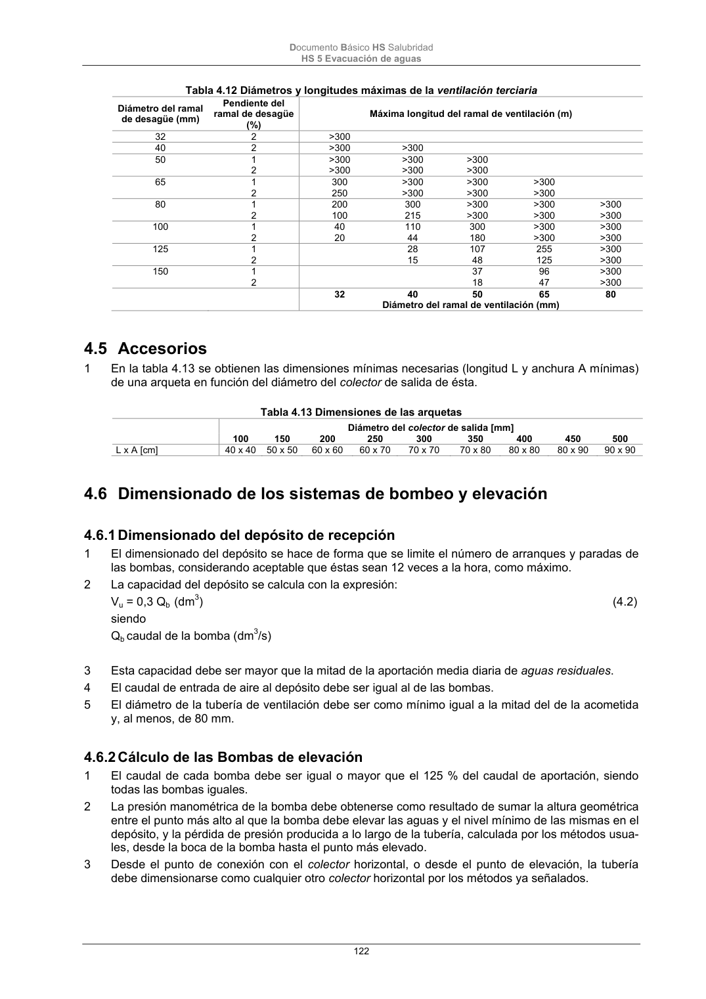

DB-HS · Fragmento de PDF p122 · versión 2022-06-14 · capa oficial
Formatos: JSON compacto · Markdown · PDF fuente
Ámbito del documento · texto del ámbito · documento y tablas
ID técnico a0274 · PDF pág. 122-123 · jerarquía no validada por persona · no es capítulo: sin_linea_de_encabezado · padre: raíz · literal original en el contenido: «4.6.2 Cálculo de las Bombas de elevación»
4.6.2 Cálculo de las Bombas de elevación 1 El caudal de cada bomba debe ser igual o mayor que el 125 % del caudal de aportación, siendo todas las bombas iguales. 2 La presión manométrica de la bomba debe obtenerse como resultado de sumar la altura geométrica entre el punto más alto al que la bomba debe elevar las aguas y el nivel mínimo de las mismas en el depósito, y la pérdida de presión producida a lo largo de la tubería, calculada por los métodos usua- les, desde la boca de la bomba hasta el punto más elevado. 3 Desde el punto de conexión con el colector horizontal, o desde el punto de elevación, la tubería debe dimensionarse como cualquier otro colector horizontal por los métodos ya señalados. Documento Básico HS Salubridad HS 5 Evacuación de aguas 123 5

PDF fuente redistribuible: copia fiel enlazada en esta página (SHA256 verificado).